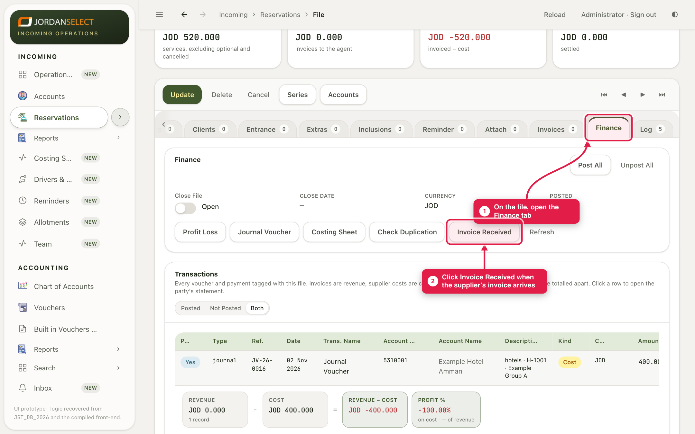
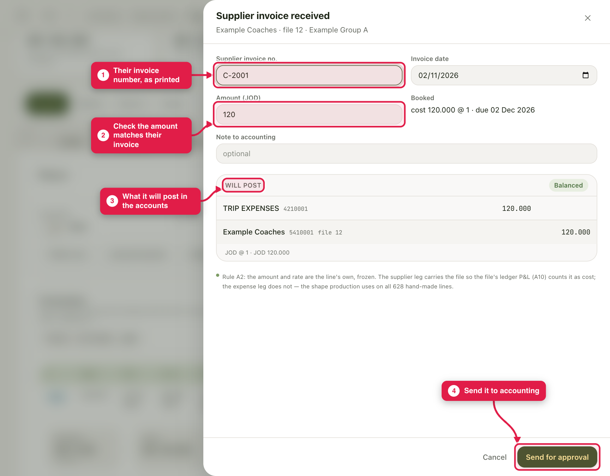
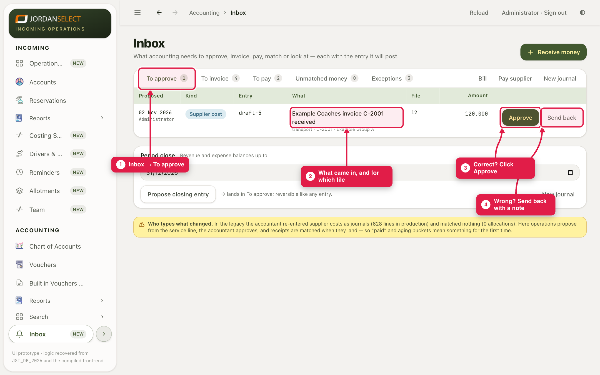
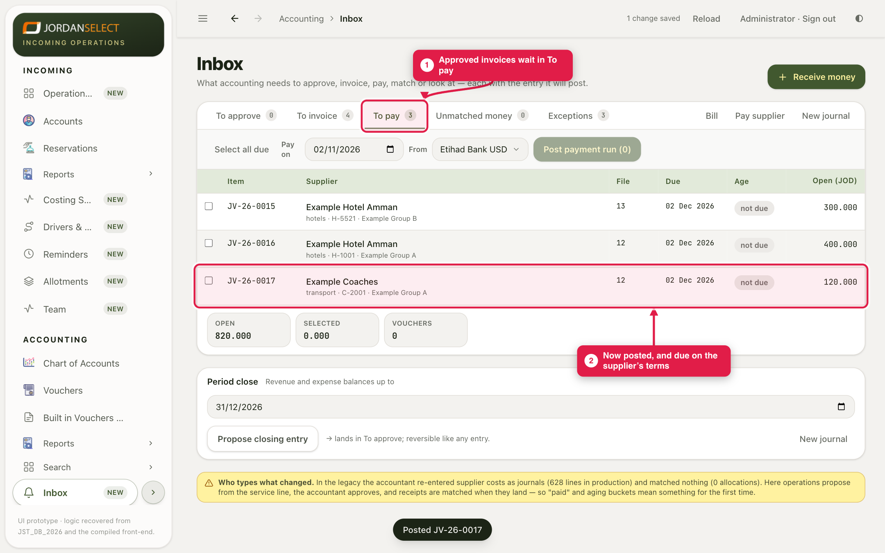

A hotel, coach company or restaurant has sent its invoice. Operations record it, and you approve it.
WhoOperations record it · the accountant approves
WhereThe file’s Finance tab, then Accounting → Inbox → To approve
Takes1 to 2 minutes per invoice
You needThe supplier’s invoice in front of you
How it works
You do not type supplier invoices yourself. Operations click Invoice Received on the file, and a draft comes to your Inbox. You check it and click Approve. Then it is posted, and it waits in To pay until it is paid.
Example in this guide: Example Coaches sent invoice C-2001 for 120.000 JOD, for the transport on file 12 (Example Group A).
1. Operations: record the invoice on the file
1
Open the file and go to the Finance tab. Find the supplier’s line and click Invoice Received.

The file’s Finance tab. Each supplier line has its own Invoice Received button.
2
Type the supplier’s invoice number as printed, and check the amount matches their invoice. The box at the bottom shows what will be posted. Click Send for approval.

Invoice Received. The amount starts at the cost on the file. Change it if the supplier billed something different.
The supplier billed a different amount?Type what is on their invoice, not what the file says. The selling price to the agent does not change.
2. Accountant: approve it
3
Open Accounting → Inbox. The To approve tab lists every draft waiting for you, with the file and the amount. Compare it with the supplier’s paper invoice.
4
Correct? Click Approve. Wrong? Click Send back and write a short note saying what is wrong. It goes back to whoever sent it.

Inbox → To approve. Click a row to see the full entry before you approve.
5
The invoice is now posted. It moves to the To pay tab, with the date it is due on the supplier’s terms.

Approved invoices wait in To pay until you pay them (see guides 05 and 06).
“The books are closed” when you approveIf the invoice date is in a period that has been closed, the system refuses it. Ask the finance manager whether to reopen the period or use a date in the open period.
3. Check your work
The draft has gone from To approve and is in To pay.
The supplier’s Statement shows the invoice as a credit (we owe them).
The file’s Finance tab shows the invoice as received.
Questions? Ask the finance manager. · Last checked: ____ · Screens shown are from a test copy of the CRM with made-up data.